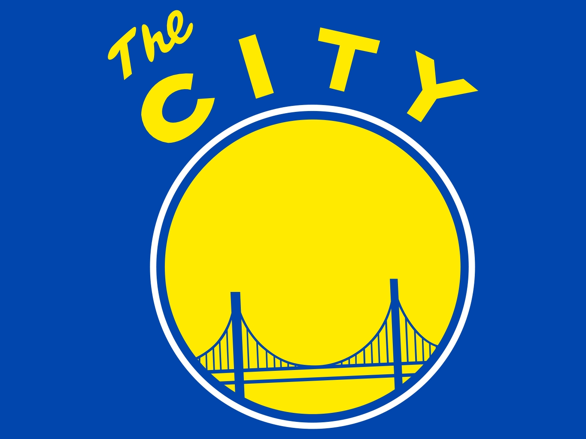

| Door Through My Mind | ||
|---|---|---|
| Hobbies | Visuals | Achievements/Activities |
| Creating Music With the Help of Instruments | I was able to take this interest of music and was able to first apply in my middle school band. That was where I learned the fundementals of music such as reading a music sheet as well as understaning tempo, rythm, etc. Not only was I able to perform in my school functions, but we were given the honour to perform at Rockefeller. Here I was able to meet such talented young minds. Once I got into highschool, I joined a club called acoustic sound. Here, I was able to practice playing my guitar and was able to collaborate with others to make covers. These experiences have enhanced my knowledge on music one step after another. Following the guitar club led to me joining a team called Nasheed. Here, my role was to beat box or make sounds with the help of my mouth. This sound will go in conjunction to the singers in the team. This year we were able to place second place. | |
I remember when it was in middle school where I was first introduced to the beautiful clarinet. That was when I learned various
fundementals to music such as reading a music sheet and the best part of all, the clarinet itself. Learning how to play such an instrument
helped me not only clear my mind through stress, but also improve my cognitive skills. Research has found that the more instruments one can
play, the more the brain is able to improve memory and cognitive skills. However, after 8th grade I eventually lost interest in the clarinet.
However, I've always desired to play the guitar ever since I was little. Over the summer, I realized that I had this guitar that was meant
for the smaller hands. However, I didn't let that stop me from actually learning to play, and with the help of youtube I learned how to play
the guitar. From there on I am now able to not only play covers or instrumentals of my favorite songs, but also use my creativity to create one.
|
||
| Visiting and following car shows |  |
Though I haven't accomplished many things related to cars, I have participated in various activities which allows me to be the car enthusiast I really am. In highschool, I've joined a club called desktop robotics, and there I was able to build this bot that utilized the power of motors and wheels. Here I was able to try different designs to see which produced the highest speed and was overall a fun learning experience. Even before that I used to collect small scaled models of my favorite cars such as the Ferrari. I would collect them and not only display them, but play with it as if the cars were driving in real world cases. Of course, the most easiest thing for me to do is go to youtube and follow channels that show cars and talk about their performance, design, etc. |
By now, you might've been able to guess that I am a car fanatic. But, more than a fanatic learning about new cars has always been a hobby.
To fully apply this interest car shows are the perfect place to go. For me, the car show is analogous to a Christmus show, because all the beautiful
concept and upcoming cars are revealed in full detail at the auto show. Ranging from sports, to muscle, and even luxurious cars, one wouldn't be able
to explore an auto show in one full day. It's almost like a scavenger hunt, which makes it even more fun to visit. Not only can I witness these magnifecant
machines, these car shows bring light to the latest technology being used in future model. This aspect of the show really tells us where, we're headed to in
terms of renewable energy in transportation, becuase one of the largest consumption of fossil fuels revolves around transportation. |
||
| Playing Basketball |  | Every summer, my friends and I would always organize this mini competition where we hold games of four rounds. After each round the loser is eliminated while the winner competes against another team. This continues on until the last two teams compete. Whoever wins that last round will be recognized as the best team until next summer. So, a couple of summers ago I participated in such a competition. It was here where I saw the vast improvement I made in basketball. I was able to make long range shots, short range, and even make layups. Best of all, I learned how to control the ball correctly. |
It hasn't been long since I was first played basketball, around the summer of eighth grade. However, since then I have enjoyed playing
basketball and really made this my hobby for the summer time. Don't mistake me for being a top player at this game, because the only thing I'm
good at is making "airballs". However, I don't let that discourage me. Everytime I go out to play ball, I always try an alternative method to improve
my skills, and it's probably this that makes it a long lasting hobby. To some extent it applies to programming too, at first there will always be problems,
but the joy of solving it is really a pleasure for the heart. |
||